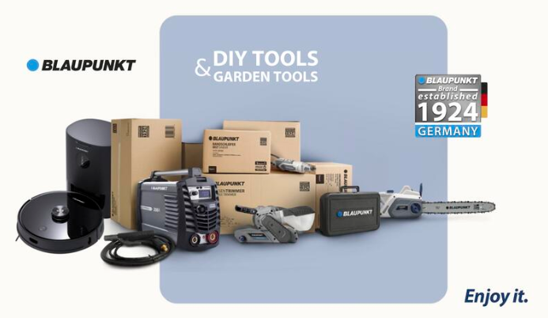

Featured Projects
Product development excellence and AI innovation portfolio

Blaupunkt Tools Portfolio
Creation and launch of a complete tools line for the European market — from concept, BOM & compliance to production.
Scope: DIY & power tools · Markets: EU

Blaupunkt Power Tools Line
Professional-grade drills, saws, sanders with technical specs, audits and safety certifications.
Innovation: Pro grade · Audits: Line inspections

Blaupunkt Garden Equipment
Outdoor equipment (chainsaws, trimmers) with complete documentation and safety compliance.
Products: Chainsaws, trimmers · Focus: Safety & compliance